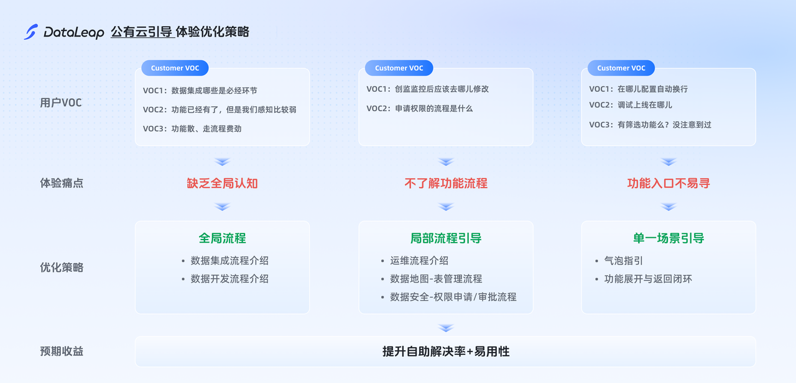

让能力容易发现
帮助用户看见当前任务需要的功能与入口。
PUBLIC CLOUD EXPERIENCE
用户不应为了完成一项任务，先学会整套产品的组织方式。这个项目从真实工单出发，围绕数据开发的关键节点，补上模块之间缺失的使用指引。

公有云工单梳理发现，功能和路径不易发现、产品之间缺少引导，是用户使用中的重要障碍。团队希望改善跨子产品的衔接体验，减少重复求助并提升满意度。
帮助用户看见当前任务需要的功能与入口。
在数据开发关键节点增加引导，解释下一步动作。
通过验证与工单反馈观察相同问题是否继续出现。
整理用户反馈，识别数据集成、权限申请、数据开发与任务运维等环节的路径与理解问题。
围绕关键问题提供功能说明、流程入口及配置指引，帮助用户在实际操作中找到下一步。
验证用户能否理解并完成目标任务，跟踪同类工单；根据灰度反馈补充暗色模式样式。
原复盘记录验证结果符合预期
复盘观察范围内未再复现
工单结果限于原复盘的观察范围，未提供完整观察周期与样本量，不等同于永久消除问题或直接证明商业转化提升。
跨产品引导需要围绕用户任务保持连续性，并覆盖不同显示主题与使用状态。暗色模式在灰度后补充的经历，也提示设计交付需要更完整地考虑状态与环境。